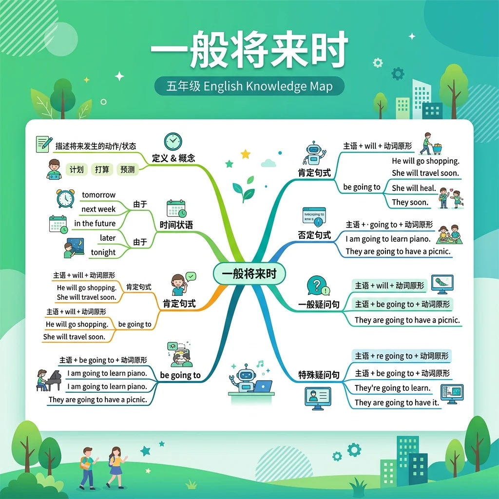
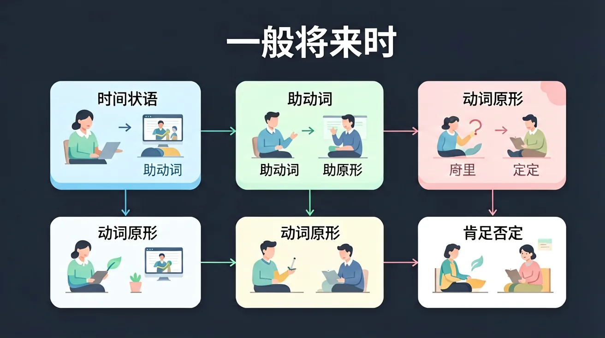

| will | be going to |
|---|---|
| 临时决定/预测（无根据） "I think it will rain." |
事先计划/有根据的预测 "Look at the clouds, it is going to rain." |
| I will help you. （临时决定帮忙） |
I am going to visit grandma. （已计划好的安排） |
学习要用心，理解比死记更重要；多问"为什么"，把知识连成网
🌍 And（已知）：我们已经学过基本词汇和句型
⚡ But（问题）：遇到更复杂的表达时还不够用
💡 Therefore（新知）：学习今天的语法，让表达更准确完整
和前测对比一下，看看你进步了多少！ 🚀
1. After this lesson, you can?
2. How confident are you about this topic now?
💡 常见错误往往就在细节中，仔细检查每一步！
和 AI 对话，深化对本节课知识点的理解
💬 参考提示词（复制给 AI 使用）：
✨ 可以用上面的提示词与 AI 展开深度对话，AI 会根据你的回答给出个性化指导。
Can you recall the key words or rules from this lesson?
Explain in your own words what you learned today.
Use today's knowledge to make a new sentence or example.
Compare this to something you already know. How are they similar or different? Can you create your own example?
先独立作答，再点选项查看对错与错因。
Look at the dark clouds! It ____ rain soon.
My father ____ fly to London next Monday.
The weather report says it ____ sunny tomorrow.
I ____ (visit) my grandparents this weekend.
答案：will visit
临时决定用will
They ____ (have) a picnic if it doesn't rain.
答案：are going to have
条件句主句用be going to
下列哪句正确使用了一般将来时？
调查3位同学周末计划，记录并分析将来时使用规律
❓ 为什么明天要说will do而不是do？
❓ 怎么知道什么时候用will，什么时候用be going to？
❓ 妈妈说明天会下雨，她用了will rain，这样说对吗？
学完这一课，这些问题你都能自信地回答。
🎯 能说出will和be going to的基本结构
🎯 能判断简单句中一般将来时的正确用法
🎯 能在对话中正确选用will或be going to
will+动词原形构成最简单将来时
be going to表示计划好的事，will表示临时决定
对比：I'll answer the phone(临时) vs I'm going to visit grandma(计划)
看天气预报图标，用will预测明天天气
设计周末计划表，用be going to写三个打算
✅ I will go to school
💡 will后误加ing形式
✅ He is going to visit the zoo
💡 遗漏be动词和冠词
口诀：将来时，很简单，will加动原形在前；有计划，用going to，临时决定will秀
类比：像准备生日派对：提前买蛋糕是be going to，突然加个气球是will
明天我们要___足球赛
Look! Those dark clouds! It ___ rain
And：学生已学过一般现在时
But：不知道如何表达未来要做的事
Therefore：学习用will说未来计划
将来时表示还没发生的事，结构是『主语+will+动词原形』。比如：明天我要帮妈妈浇花→I will water the flowers for Mom tomorrow。注意will后面永远跟动词原形，就像『会』字后面直接加动作。
🌍 看天气预报时：『明天会下雨』就是It will rain tomorrow；和同学约周末踢球可以说We will play soccer on Sunday。
选正确的将来时句子：
And：知道基本将来时结构
But：容易漏掉时间词
Therefore：掌握常见未来时间词
用将来时一定要像绑鞋带一样带上时间词！常见的有：tomorrow（明天）、next week（下周）、in 10 minutes（10分钟后）。比如：下个月我表妹要来过生日→My cousin will come for her birthday next month。没有时间词就像没写日期的日记，别人不知道什么时候发生。
🌍 开学时说：『我们下周一要发新课本』→We will get new books next Monday；睡前闹钟响了可以说I will get up at 7:00 tomorrow。
哪个时间词不能用在将来时？
And：会造肯定句
But：不会拒绝或提问
Therefore：学习将来时的变化形式
说不做某事就在will后加not，像三明治夹心：I will not (won't) watch TV tonight。问问题要把will放句首，就像把车头调过来：Will you join the party? 例如：妈妈问『你明天会整理书包吗？』→Will you tidy your schoolbag tomorrow?
🌍 同学约你但不想去：I won't go to the cinema on Saturday；问周末计划：Will you visit your grandma this weekend?
哪句将来时疑问句正确？
And：掌握各种句型
But：不会连贯表达
Therefore：用将来时制定每日计划
现在试试用将来时串起三个动作，像串糖葫芦：First I will walk the dog at 7:00, then I will have breakfast at 7:30, finally I will go to school at 8:00。注意每个动作都要带will，时间顺序可以用first/next/then来连接。
🌍 和妈妈汇报计划：『放学后我先写作业，然后练钢琴，最后和小华玩积木』→After school I will do homework first, next I will practice piano, then I will play blocks with Xiaohua。
哪个是正确的时间顺序词？

